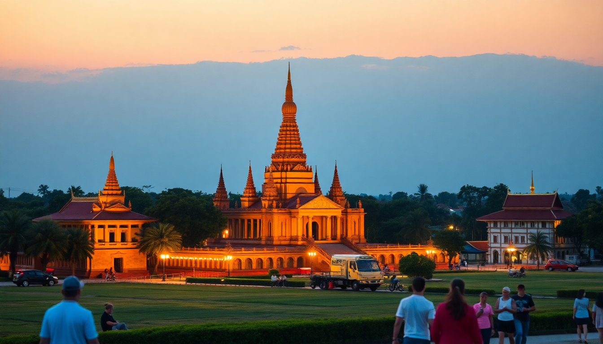

Best Day Trips from Bangkok: Ayutthaya, Kanchanaburi & More

I’ve done all three of these day trips from Bangkok, and they’re very different experiences. Ayutthaya is the historical heavyweight, Kanchanaburi mixes war history with nature, and Damnoen Saduak is the floating market you’ve seen on Instagram. Here’s what actually worked, what didn’t, and how to avoid wasting half your day in traffic.
Is Ayutthaya worth the trip from Bangkok?
Yes, but only if you plan your transport right. The ancient capital is about 80 kilometers north of Bangkok, and the worst mistake is taking a bus or minivan that gets stuck in morning traffic for two hours. I took the train from Hua Lamphong Station to Ayutthaya Station — it cost around 20 baht for a third-class seat, took about 90 minutes, and dropped me right near the old town. No traffic.
The temple ruins are spread out, so rent a bicycle near the station or hire a tuk-tuk for the day. My favorite spots:
- Wat Mahathat — the famous Buddha head entwined in tree roots. It’s crowded by 10 a.m., so go early.
- Wat Ratchaburana — you can climb down into the crypt and see faded 15th-century murals. Creepy and cool.
- Wat Phra Si Sanphet — the three towering chedi that are basically the postcard shot of Ayutthaya.
- Wat Chaiwatthanaram — on the riverbank, less crowded, and the sunset light hits it beautifully.
- Baan Kao Nhom — a tiny dessert shop near the train station. Their Thai-style coconut pancakes are 10 baht each and worth the detour.
I’d skip the Ayutthaya Historical Study Centre unless you’re a serious history buff. It’s dry. And don’t bother with the elephant camps — they’re touristy and the animals aren’t treated well.
How do you get to Kanchanaburi and what should you see?
Kanchanaburi is west of Bangkok, about two hours by car or train. I took the train from Thonburi Station (not Hua Lamphong) — it runs along the Death Railway route, crossing the famous wooden viaduct. The ride itself is the attraction. It’s slow, hot, and the seats are wooden slats, but the views over the Khwae Noi River are worth the discomfort.
The main draw is the Bridge on the River Kwai, but it’s more of a photo stop than a deep experience. The real weight is at the JEATH War Museum and the Kanchanaburi War Cemetery — both sobering, well-presented, and free from gimmicks. Give yourself at least an hour at the museum.
If you have time, head north to Erawan National Park and the seven-tiered Erawan Falls. It’s about an hour from town by songthaew (shared truck-taxi). The lower pools are packed with tourists splashing around, but hike up to tier four or five and you’ll have space to yourself. The water is emerald green and surprisingly cold. Bring water shoes — the rocks are sharp.
I stayed overnight in Kanchanaburi once at The FloatHouse River Kwai Resort — it’s a floating hotel on the river, accessed by longtail boat. Overpriced for what it is, but the experience of sleeping over the water is unique. For a day trip, you don’t need to stay.
Is Damnoen Saduak floating market a tourist trap?
Honestly, yes — but it’s still worth seeing once. Damnoen Saduak is about 100 kilometers southwest of Bangkok, in Ratchaburi province. The market is a canal network where vendors sell fruit, souvenirs, and pad thai from wooden boats. It’s photogenic, loud, and chaotic. The problem is that it’s become a theme park version of itself. Boat prices are inflated, and vendors will aggressively push overpriced trinkets.
I went with a tour that picked me up from my hotel in Bangkok at 6 a.m. — worth it to beat the worst crowds. By 9 a.m., the canals are gridlocked with tourist longtails. The best tactic is to hire a small paddle boat (not a motorized one) and explore the quieter side canals. You’ll still see the floating stalls but without the diesel fumes.
What to actually buy there: fresh coconut ice cream, mango sticky rice, and grilled river prawns. Skip the branded T-shirts and wooden elephants — you can get those cheaper at Chatuchak Weekend Market in Bangkok.
If you want a less touristy floating market, try Khlong Lat Mayom or Taling Chan — both are closer to Bangkok and have more locals than tourists. But they’re smaller and don’t have the same visual punch.
Which day trip is best for a first-time visitor?
It depends on what you want. If you care about history and architecture, Ayutthaya is the clear winner. If you want a mix of natural beauty and WWII history, go to Kanchanaburi. If you’re chasing a specific Instagram shot of boats piled with fruit, Damnoen Saduak delivers — just know what you’re getting into.
I’d rank them:
- Ayutthaya — easiest logistics, most rewarding sights, good for a full day.
- Kanchanaburi — requires more travel time but offers variety (bridge, museum, waterfalls).
- Damnoen Saduak — fun for an hour, but the travel time and crowds make it the weakest option.
If you only have one day, pick Ayutthaya. If you have two, add Kanchanaburi.
What’s the best way to book transport for these trips?
For Ayutthaya, the train from Hua Lamphong is the cheapest and most reliable. Trains leave roughly every hour from 6 a.m. to 10 a.m. Buy your ticket at the station — no need to book ahead. Return trains run until about 6 p.m., but check the schedule at the station when you arrive.
For Kanchanaburi, the train from Thonburi Station departs at 7:45 a.m. and 1:30 p.m. The morning train is better because you arrive by 10 a.m. and have the whole day. The afternoon train gets you there at 4 p.m., which is only useful if you’re staying overnight.
For Damnoen Saduak, I used a GetYourGuide tour that included hotel pickup and a longtail boat ride. It cost about 800 baht per person. You can also take a minibus from Southern Bus Terminal (Sai Tai Mai) for around 100 baht, but you’ll have to negotiate boat rental on arrival, which can be a hassle.
Driving yourself is not worth it. Traffic in and out of Bangkok is unpredictable, parking near the attractions is a mess, and you’ll spend more time navigating than sightseeing.
FAQ
How long does it take to get from Bangkok to Ayutthaya by train? About 90 minutes from Hua Lamphong Station to Ayutthaya Station. The train is slow but comfortable enough. Avoid the express trains — they cost more and don’t save much time.
Can you do Kanchanaburi and Damnoen Saduak in the same day? Technically yes, but I wouldn’t. They’re in opposite directions from Bangkok. You’d spend four hours in transit just to spend two hours at each place. Pick one and do it well.
What should I pack for these day trips? Water, sunscreen, a hat, and comfortable walking shoes. For Kanchanaburi, bring swim trunks and water shoes if you plan to hike to Erawan Falls. For Ayutthaya, a scarf or shawl to cover shoulders at temple entrances. Cash is essential — none of these places take cards for small purchases.
Conclusion
- Ayutthaya is the best all-around day trip: easy train access, impressive ruins, and good food.
- Kanchanaburi is worth the longer journey if you want war history and waterfalls.
- Damnoen Saduak is a tourist trap, but a photogenic one — go early and skip the overpriced boat tours.
- Take the train, not a bus or car, to avoid Bangkok traffic.
- Bring cash, sunscreen, and patience. These trips are rewarding but not relaxing.